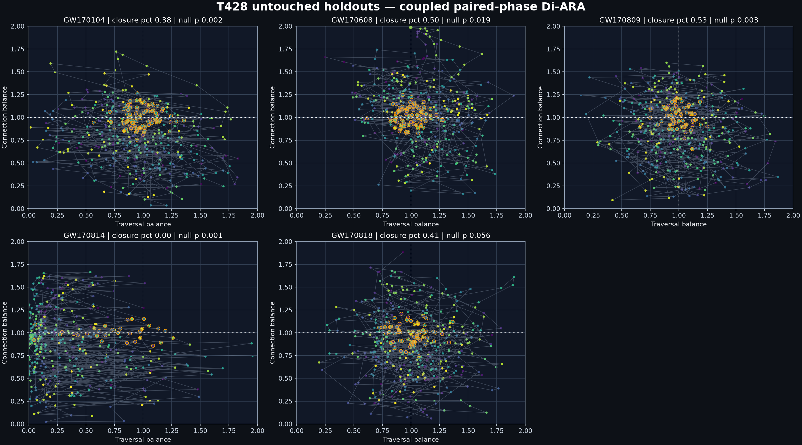
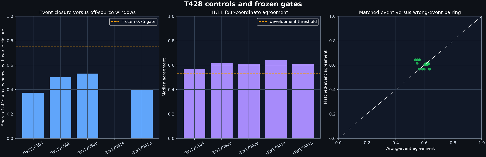
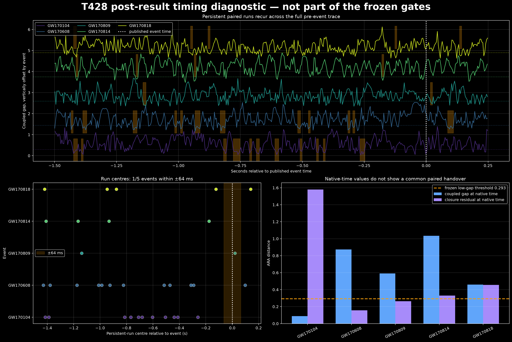

T428 — Corrected paired-phase spacetime Di-ARA
A frozen correction to T427: instead of plotting two leading-side summaries as though they were one ARA pair, T428 separately measures traversal change/persistence and spectral concentration/dispersion, then tests their coupled relation in five untouched binary-black-hole strain records.
PRIMARY CLAIM NOT SUPPORTEDLOCAL CHRONOLOGICAL PAIRING RETAINED
Answer first
The correction produced a cleaner instrument, but it did not recover a black-hole-event-specific parent handover. All five holdouts contain short paired runs and pass the frozen H1/L1 agreement threshold; four of five are sensitive to circularly breaking the within-trace chronology. However, none of the five event windows closes better than the required 75% of its own off-source windows, matched events beat wrong-event detector pairings only 55% of the time, and the short runs recur throughout the pre-event background rather than concentrating at the published event time.
ARA reading: T427 really had flattened distinct sides. T428 repairs that. The connection pair behaves oppositionally, but the corrected four-feature relation is a recurring local child-scale organization of these processed strain histories—not yet the parent-scale black-hole handover. The traversal anti-phase remains unresolved or is being measured at the wrong rung/cut.
What was corrected
Traversal ARA
T_A measures spectral power/change. T_B measures adjacent-frame complex spectral persistence after hop-phase removal. Neither is defined from the other.
Connection ARA
K_A measures spectral concentration using one minus normalized entropy. K_B measures effective spectral width. They are related functionals, but no 2-K_A mirror is imposed.
Local projection
Each feature is independently placed on 0–2 using its own detector-specific off-source empirical CDF. The local off-source median is the child ridge at 1.
Coupled test
The two measured pairs are scored for TE-ARA closure, within-pair gap, four-coordinate H1/L1 agreement, wrong-event identity, and circular time-shift specificity.
Holdout paths

Orange rings mark frames below the development-frozen coupled-gap threshold. The paths do repeatedly reach the paired region, but the cloud shape and event-window closure vary strongly—especially GW170814, which is displaced toward a different traversal regime.
Frozen controls

Left: no holdout reaches the frozen 0.75 closure percentile. Centre: every holdout clears the development H1/L1 agreement threshold. Right: matched detector pairs overlap wrong-event pairs heavily, yielding only 55% matched wins rather than the required 75%.
Post-result timing diagnostic
This diagnostic is exploratory and did not alter the frozen T428 verdict. It was added after seeing that all five traces contained persistent low-gap runs, to ask whether those runs were specifically tied to the physical event time.

The orange bands and run-centre dots show repeated paired episodes across the full 1.75-second slice. Only GW170809 has a persistent run within ±64 ms. Therefore the local crossing is real to this instrument, but it does not presently locate the binary-black-hole handover.
Holdout results
| Event | Closure percentile | Local paired run | Median H1/L1 agreement | Traversal ρ | Connection ρ | Circular-null p |
|---|---|---|---|---|---|---|
| GW170104 | 0.375 | yes | 0.568 | −0.006 | −0.316 | 0.002 |
| GW170608 | 0.500 | yes | 0.617 | 0.019 | −0.390 | 0.019 |
| GW170809 | 0.531 | yes | 0.609 | 0.113 | −0.376 | 0.003 |
| GW170814 | 0.000 | yes | 0.644 | 0.102 | −0.545 | 0.001 |
| GW170818 | 0.406 | yes | 0.606 | 0.071 | −0.296 | 0.056 |
The consistently negative connection correlations are the cleanest structural result. The traversal correlations cluster near zero, so T_B is not a global anti-phase of T_A. That does not forbid a local or delayed handover, but it rejects this pair as a complete parent-wide inverse relation.
Scientific and ARA interpretation
- Supported descriptively: separately measured connection concentration and dispersion oppose one another across all five events; the coupled four-feature system repeatedly enters short low-gap states.
- Supported by one control: preserving the correct within-trace chronology matters in four of five circular-shift tests.
- Not supported: these states are not selectively concentrated in the physical event window and do not identify the published merger/handover.
- Not identified physically: the coordinates are features of received, whitened detector strain. They are not literal internal black-hole components, and the test does not yet establish which object/rung owns the recurring local pair.
- Likely methodological source of recurrence: all four coordinates are extracted from overlapping adjacent STFT frames, so background strain and preprocessing can preserve local temporal relation even without an astrophysical event. Event-versus-off-source and matched-versus-wrong-event controls are what prevent that from being overcalled.
Best next test
Do not tune a smaller window around whichever T428 crossing looks best. The next informative test is an event-locked child-versus-background contrast: freeze a short window from an independent development event using a physically external landmark (native strain-energy onset or peak, not an ARA crossing), calculate the same four histories in that window and identically placed off-source windows, and demand both:
- the event-locked path beats its own off-source and wrong-event controls, and
- the traversal pair acquires reproducible opposition or a reproducible lagged handover that is absent under time reversal/circular shifts.
If that fails, T_B should be retired as the missing traversal anti-phase. If it passes, the short event-locked path becomes a defensible child handover candidate rather than a post-hoc segment of a long trace.
Scope, sources and reproduction
Development event: GW150914. Untouched holdouts: GW170104, GW170608, GW170809, GW170814 and GW170818. Public 32-second, 4096 Hz H1/L1 strain records were inherited from T427’s frozen Gravitational Wave Open Science Center source set. The fixed analysis slice is −1.50 to +0.25 seconds; calibration uses off-source intervals [−12,−4] and [+4,+12] seconds. The STFT is fixed at 64 ms with a 4 ms hop over 30–512 Hz.
Frozen protocol SHA-256: dbd4748eae616f05099ba8f4b9c683a61331f8521f36b760e5a03bb6c394ba62.
Frozen protocolMachine-readable resultsHoldout summary CSVCoordinate histories CSVTiming diagnostic JSON
GW170104 detailGW170608 detailGW170809 detailGW170814 detailGW170818 detail
{kind=link}
{kind=link}
{kind=link}
{kind=link}
{kind=link}
The post-result timing diagnostic is intentionally separated from the frozen primary gates. No failed gate was relaxed and T427 remains unchanged.